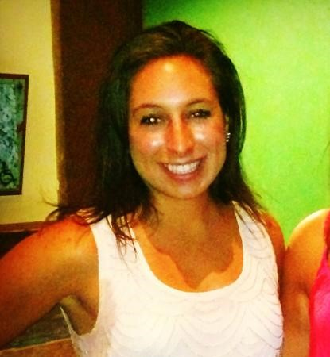

In 2013 I graduated from Quinnipiac University in Connecticut with a bachelor’s degree in Health
Sciences.
I then attended Northeastern University for graduate school where I earned a professional doctoral
degree
in Physical Therapy. Post-graduation, I worked in the field of physical therapy for two years but
did
not
feel fulfilled by my career. The aspects of my job that I enjoyed the most included working with
technology
and software, which sparked my interest in computer science.
At that point, I began taking night courses at schools including Boston University and Quincy
College to
learn
more about software development. After approximately one year of taking courses and learning various
programming
languages on my own including Python, C and SQL I accepted a position working as a Quality Assurance
Engineer. Through
this program at Harvard Extension School I hope to eventually earn a position working as a front-end
developer.